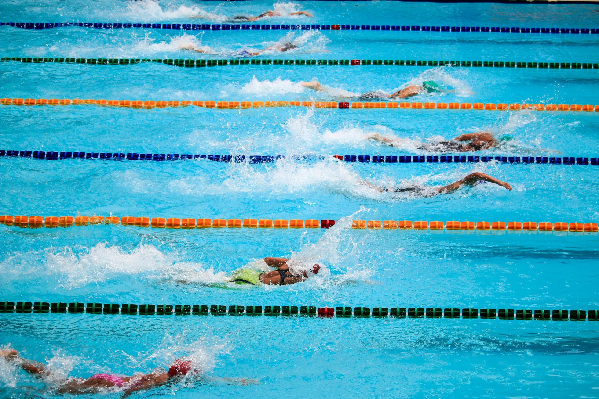
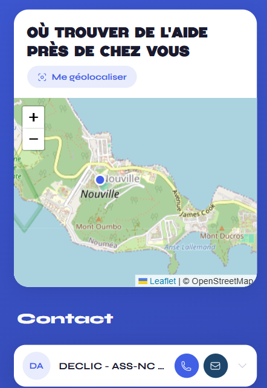
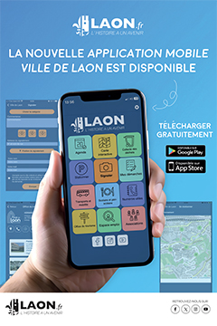
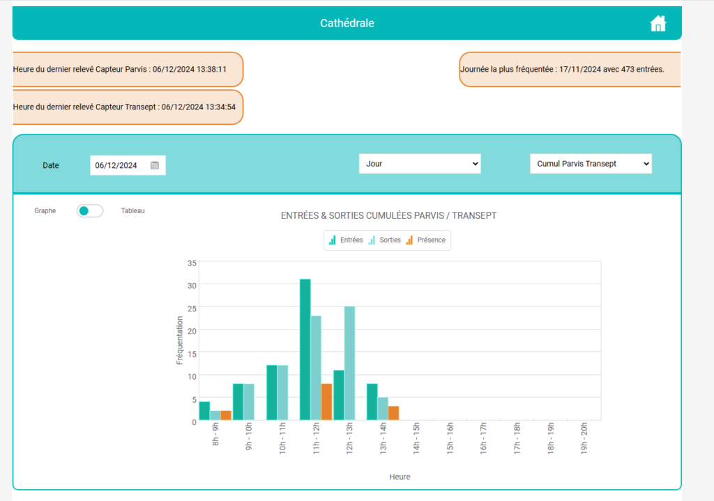

Estelle · Portfolio
Développeuseweb
À propos de moi

Après une expérience de 10 ans en tant qu'éducatrice sportive, j'ai choisi de réorienter ma carrière vers le développement informatique, un domaine qui me passionne et que j'ai commencé à explorer en autodidacte.
J'ai fait le choix d'autofinancer ma reprise d'études avec un BTS SIO, que je poursuis aujourd'hui en licence professionnelle en alternance.
Formation
- 2012Bac Sciences et technologiesObtention en 2012
- 2014BPJEPS Activités AquatiquesFormation en 2014
- 2025BTS Services informatiquesObtenu en juillet 2025 · Option : Solutions logicielles et applications métiers · CNED
- 2026Licence professionnelle métiers de l'informatique : Application webEn cours
Mes réalisations
Alternance & stages
Module d'accessibilité Tenjity
Accessibilité web embarquée
Ajout de fonctionnalités, refactorisation et intégration d'un module d'accessibilité web embarqué sur des sites tiers, développé en Vue.js 3.

AlternanceSafe Campus
Front Nuxt et back Laravel
Plateforme web de prévention des conduites à risques en milieu universitaire : santé mentale, addictions, violences sexistes et sexuelles.

StageApplication mobile Ville de Laon
Inscription aux services scolaires
Module d'inscription aux services scolaires ajouté à l'application mobile de la ville, développé en WinDev Mobile.

StageProtocole MQTT
Récupération des données
Connexion à un broker MQTT pour récupérer et exploiter les données de fréquentation de la cathédrale.
Ateliers professionnels
Mediatek Formation
Faire évoluer un site Symfony
Évolution d'un site Symfony de formations en ligne pour MediaTek86, réseau de médiathèques de la Vienne.
Mediatek Documents
Application C# reliée à une API PHP
Application desktop de gestion documentaire pour MediaTek86, appuyée sur une API REST en PHP et une base MySQL.
Outils de veille
Alertes
Google Alerts
Raindrop — ajout d'articles
Réseaux
Suivi sur LinkedIn
Sites web
Sites spécialisés (Actu IA, Le Monde Informatique...)
Autoformation
CNIL · Grafikart · OpenClassrooms
L'intelligence artificielle et la protection des données
L'intelligence artificielle suscite de plus en plus d'intérêt, surtout en raison de son développement rapide ces dernières années. De plus en plus présente dans notre quotidien, l'IA est utilisée dans de nombreux métiers, offrant des outils puissants pour améliorer l'efficacité et résoudre des problèmes complexes. Cependant, avec ces avancées, il est important de rester vigilant sur les questions de sécurité et de protection des données. Une veille sur l'IA permet de suivre son évolution et de mieux comprendre ses impacts.
Sites consultés régulièrement
La CNIL Actu IA Le Monde Informatique The Hacker News Developpez.comSites pour l'autoformation
OpenClassrooms L'atelier RGPD de la CNIL Grafikart Learn Microsoft — Tutoriel C#Contactez-moi
Une proposition, une question sur un projet ? Écrivez-moi sur LinkedIn ou retrouvez-moi sur GitHub.
LinkedInlinkedin.com/in/estelle-f GitHubgithub.com/S-T-L